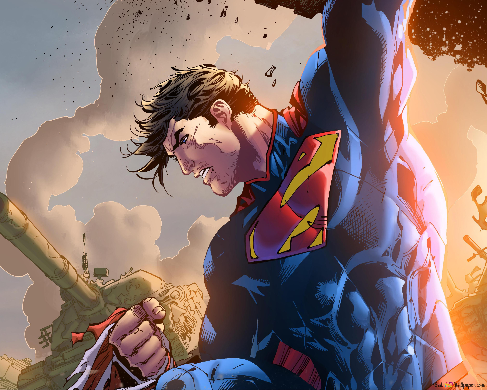
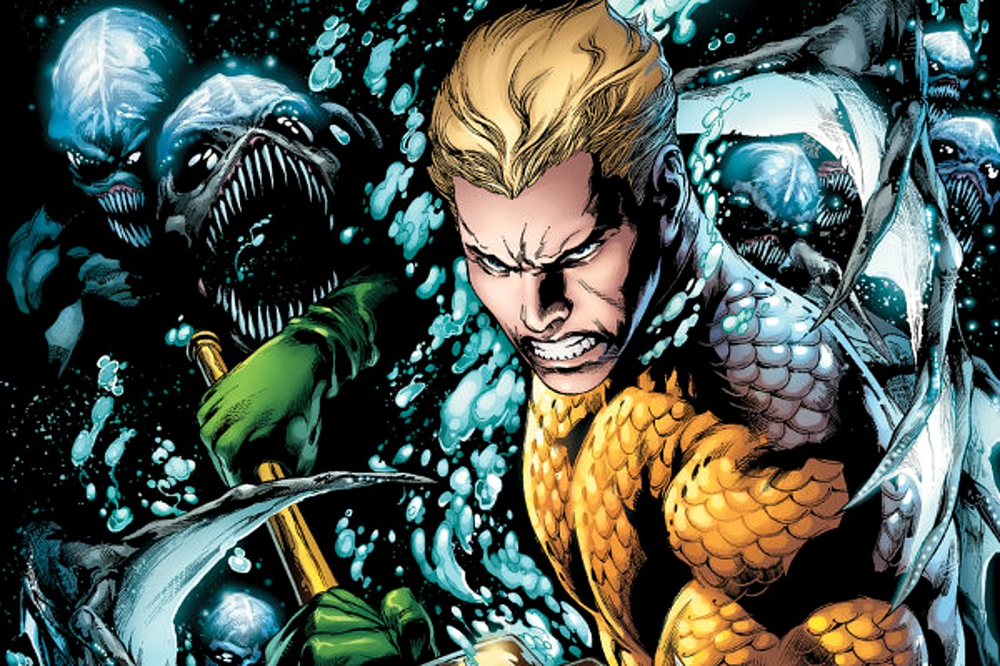
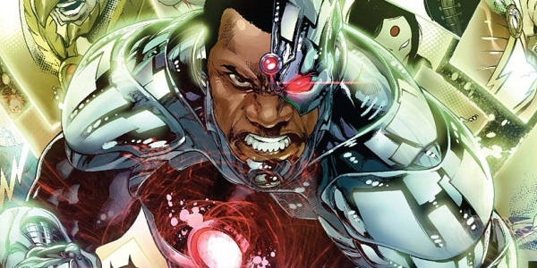
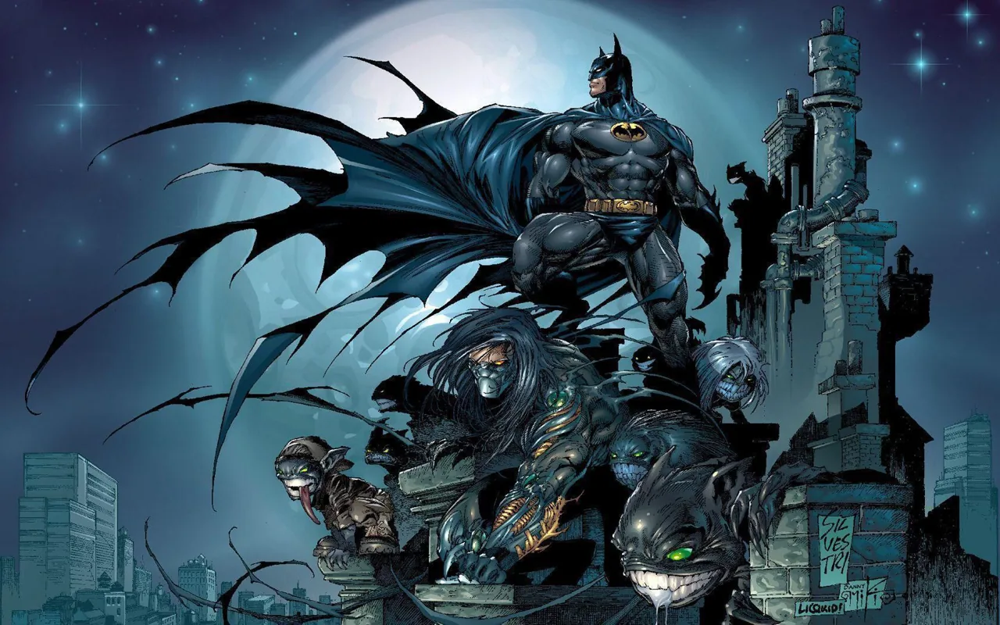

Superman
Superman, também conhecido como o "Homem de Aço", é um super-herói da DC Comics. Ele foi criado por Jerry Siegel e Joe Shuster e fez sua primeira aparição em Action Comics #1 em 1938. Superman é um dos super-heróis mais icônicos e populares de todos os tempos.
Caçador de Marte
Caçador de Marte, também conhecido como J'onn J'onzz, é um super-herói da DC Comics. Ele foi criado por Joseph Samachson e Joe Certa e fez sua primeira aparição em Detective Comics #225 em 1955. Caçador de Marte é o último sobrevivente da raça marciana, também conhecida como Marcianos Verdes.

Aquaman
Aquaman é um super-herói da DC Comics. Ele fez sua primeira aparição em More Fun Comics #73 em novembro de 1941 e foi criado por Paul Norris e Mort Weisinger. Aquaman, cujo nome real é Arthur Curry, é o rei de Atlantis, uma cidade submarina oculta, e é conhecido por sua força sobre-humana, resistência e capacidade de se comunicar com a vida marinha.
Flash
Flash é um super-herói da DC Comics. Ele foi criado por Gardner Fox e Harry Lampert e fez sua primeira aparição em Flash Comics #1 em 1940. Flash é conhecido por sua velocidade sobre-humana e é considerado o homem mais rápido do mundo.

Cibogue
Ciborgue, também conhecido como Victor Stone, é um super-herói da DC Comics. Ele foi criado por Marv Wolfman e George Pérez e fez sua primeira aparição em DC Comics Presents #26 em 1980.
Mulher Maravilha
Mulher-Maravilha, também conhecida como Diana Prince, é uma super-heroína da DC Comics. Ela foi criada por William Moulton Marston e Harry G. Peter, e fez sua primeira aparição em All Star Comics #8 em 1941.

Batman
Batman é um super-herói criado pelo artista Bob Kane e pelo escritor Bill Finger, publicado pela DC Comics. Ele fez sua primeira aparição em Detective Comics #27 em 1939 e desde então se tornou um dos personagens de quadrinhos mais icônicos e duradouros de todos os tempos.
Lanterna Verde
Hal Jordan é um dos personagens mais icônicos que assumiu o manto de Lanterna Verde na DC Comics. Ele é conhecido como um dos principais membros da Tropa dos Lanternas Verdes e já foi o protagonista de várias histórias populares ao longo dos anos.